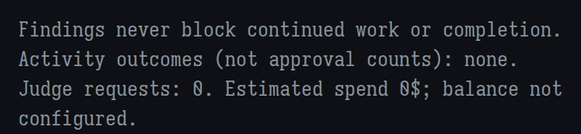
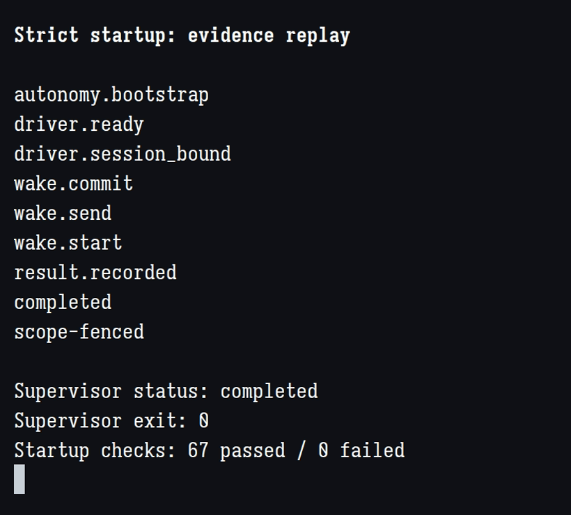

Session controls
/jev- Reports whether checks are on for the current session.
/jev offand/jev on- Turn checks off and back on for this session. Host permissions stay the same.
/jev-status- Reports the mode, diagnostic coverage and judge usage.
The live recording shows /jev reporting On, /jev off reporting Off, and /jev on reporting On again. The expanded status recorded no diagnostic outcomes and zero judge requests.

Watch session controls (GIF)See Off state (PNG)See status (PNG)


Strict supervisor startup
The startup scenario supplied a read-only objective for notes.txt. The replay shows the session binding, wake and recorded tool result. The supervisor exited with code 0; the status command returned completed.

Watch startup replay (GIF)See result (PNG)Read evidence excerpt (JSON)